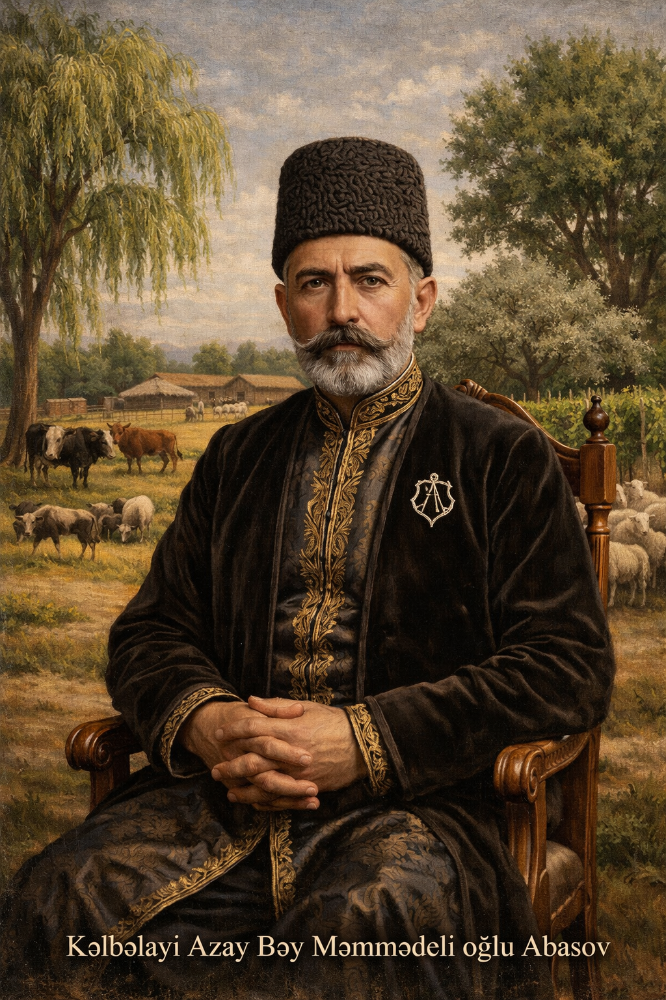
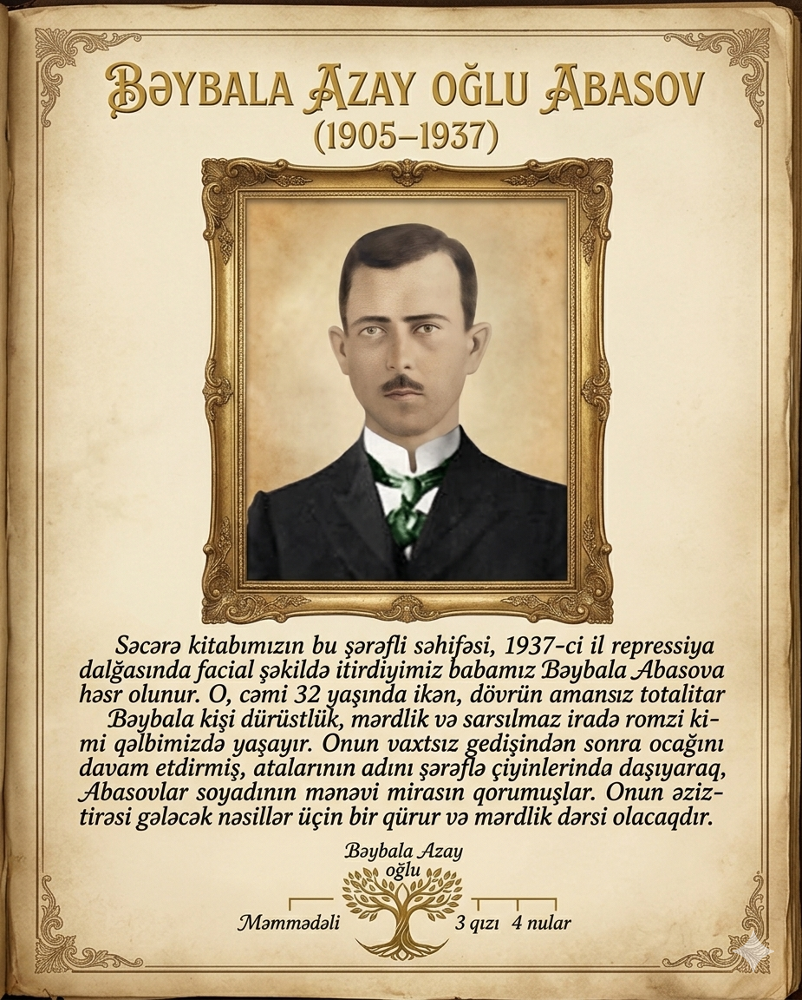
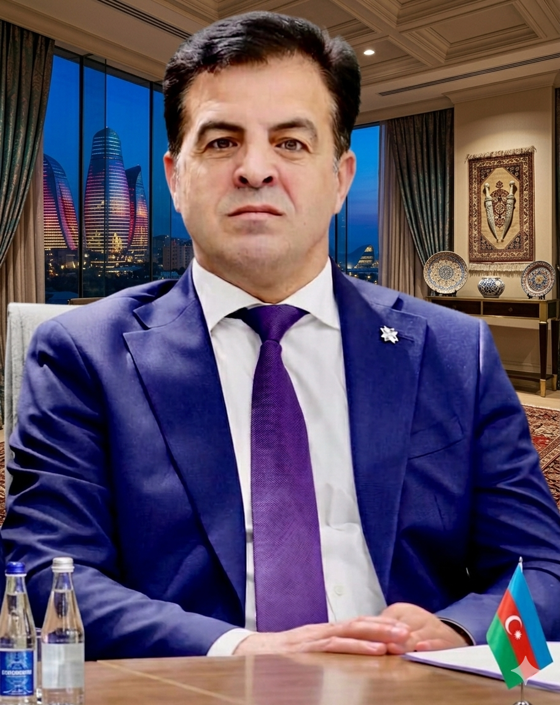
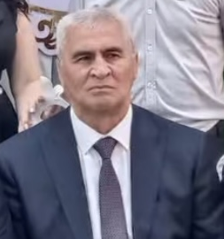
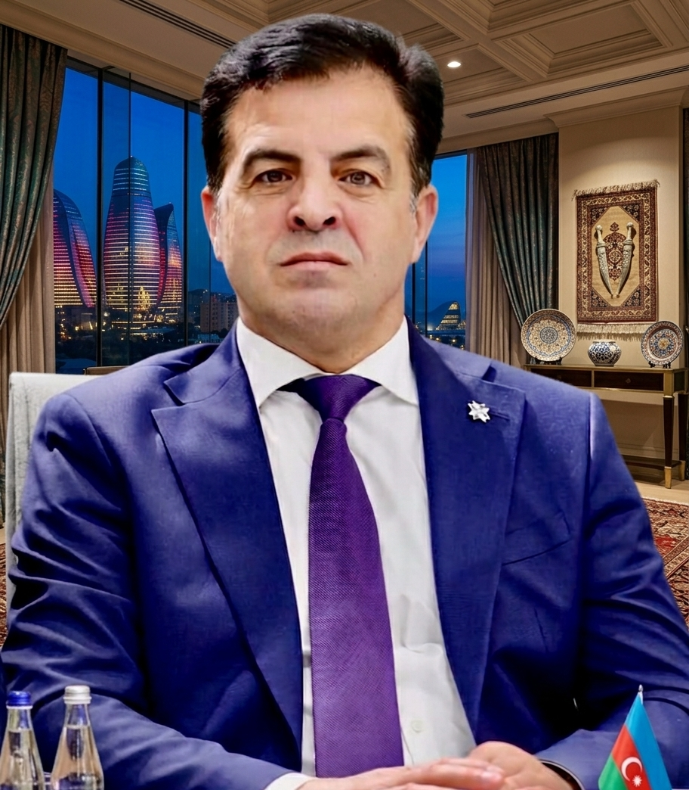
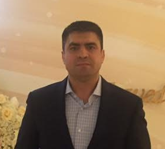
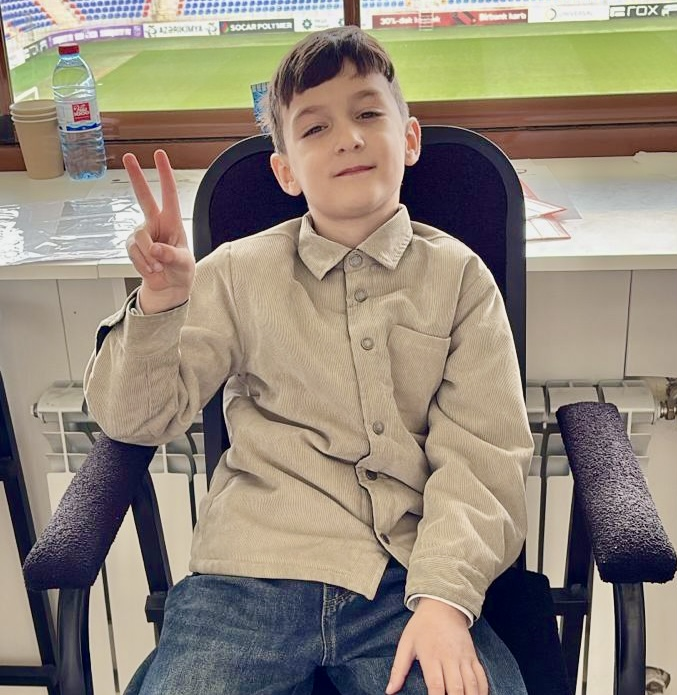
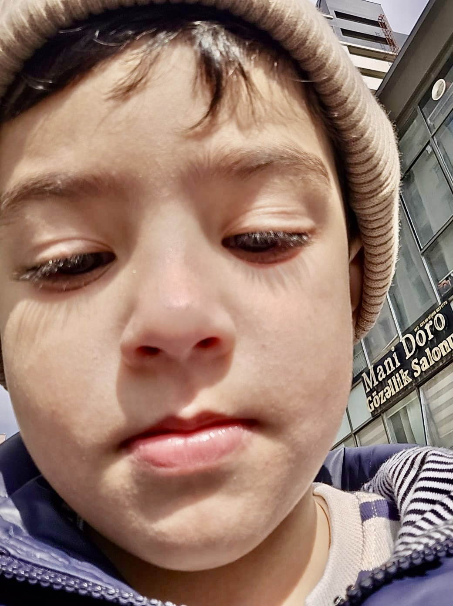
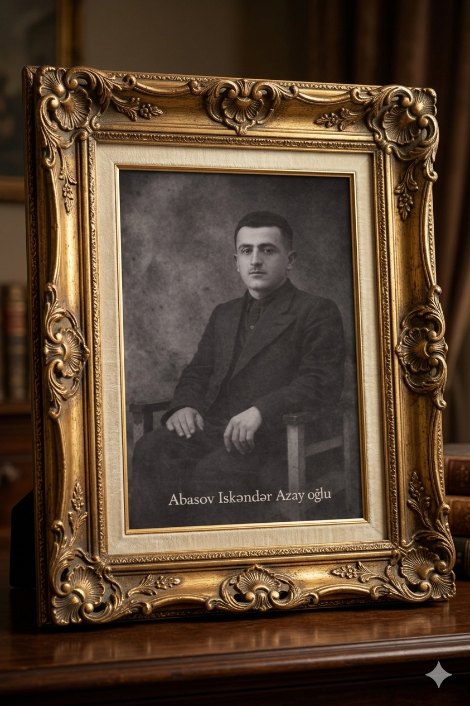
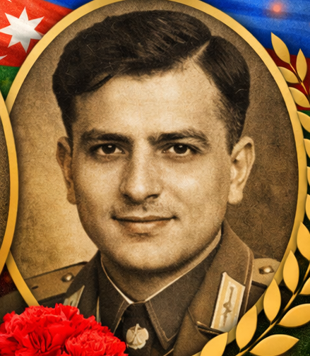
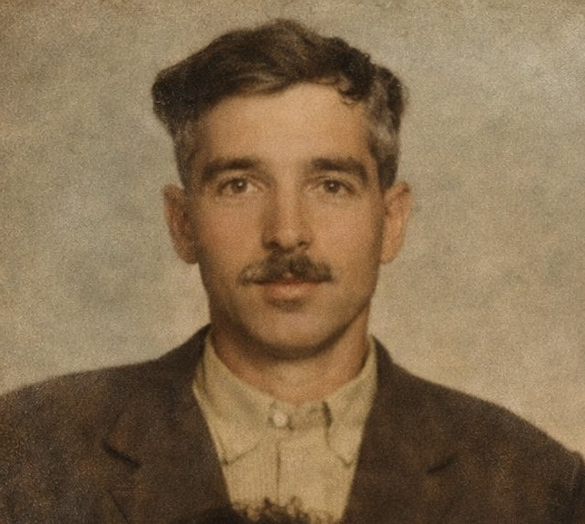

1905-ci ildə dünyaya göz açan Bəybala kişi ailəsinin dayağı, ocağının çırağı idi. 32 yaşının ən gənc və verimli çağında, heç bir günahı olmadan dövrün repressiya maşını tərəfindən hədəf seçildi və şəhidlik zirvəsinə ucaldı.
Onun itkisi nəinki bir ailənin, bütün nəslin qəlbində sağalmaz bir yara açsa da, qoyub getdiyi mənəvi miras bu günə qədər yaşamaqdadır. Oğlu Məmmədəli onun adını çiyinlərində daşıdı.
«Nəsil Kitabı»mızın bu səhifəsi onun əziz xatirəsinə bir ehtiram borcumuzdur. Allah rəhmət eləsin!
1927-ci ildə dünyaya göz açan Məmmədəli müəllim, uşaq yaşlarında atasını repressiya qasırğasında itirsə də, onun adını və şərəfini qorumağı özünə həyat amalı seçdi. Bu şəcərənin ən böyük ailə başçısı olaraq bütün nəslin hörmət və sevgisini qazandı.
1978-ci il oktyabrın 27-də ömrünün 51-ci baharında, Rusiya Federasiyasının Stavropol diyarında, Svetloqrad şəhəri yaxınlığında avtomobil qəzasında həyatını itirdi. Bu vaxtsız itki bütün nəsil üçün dərin kədər oldu.
«O, bir çinar kimi kökü ilə torpağına, budaqları ilə gələcəyə bağlı idi.»
21 aprel 1915-ci ildə Əhmədbəyli kəndində anadan olmuşdur. 22 iyun 1941-ci ildə Bakı şəhəri Caparidze Rayon Hərbi Komissarlığı tərəfindən orduya çağırılmış, 40-cı aviabriqudada pilot kimi xidmət etmişdir.
Volxov cəbhəsində Leninqradın mühasirəsinin yarılmasında iştirak etmiş, «Leninqrad uğrunda döyüşün xatirəsinə» nişanı ilə təltif edilmişdir. «I Dərəcəli Vətən Müharibəsi» Ordeni sahibidir (01.08.1986).
Müharibədən sonra «İzvestiya» (Azərbaycan) qəzetinin Baş redaktoru vəzifəsini tutmuşdur. «Ölməz Alay» beynəlxalq arxivlərində əbədiləşdirilmişdir.
Şirinbəyim xanım qolunun nümayəndəsi. 1976-cı ildə Azərbaycan İnşaat-Memarlıq Universitetini bitirərək milli tikinti sektoruna qədəm qoymuşdur. Cəmi 23 yaşından etibarən məsul rəhbər vəzifələrini icra etməyə başlamışdır.
15 il ərzində Baş Bakı Tikinti İdarəsinin 7 saylı İdarəsinin rəisi, sonra isə «Azərbaycan Kurort Tikinti» İdarəsinin Baş direktoru olmuşdur. Əməkdar mühəndis, professor Lətif Zeynalovla ömürlük dostluq bağlamışdır — hər ikisi həm orta məktəbdə, həm universitetdə eyni sinifdə oxumuşlar. 4 övlad atası. 2003-cü ildə vəfat etmişdir.
1974–1979-cu illərdə Gəncə Kənd Təsərrüfatı İnstitutunun İqtisadiyyat fakültəsini bitirmiş. Əmək yoluna Saatlı rayonunun «Ukrayna» kolxozunda iqtisadçı kimi başlamışdır.
Abşeron Su Meliorasiya İdarəsindən, Xətai rayonu meyvə-tərəvəz bazasından keçərək 1995-ci ildən Bakının ən böyük ticarət obyektlərindən biri olan 1 Nömrəli Universam-ın direktoru olmuşdur. İki oğlu: Məmmədəli (1989), Fuad (1990). 2019-cu ildə böyrək çatışmazlığından vəfat etmişdir.
1978–1983-cü illərdə Gəncə Kənd Təsərrüfatı İnstitutunun Mexanika fakültəsini bitirmiş. Saatlı «Sabir» kolxozunda mühəndis kimi fəaliyyətə başlamışdır.
Saatlı rayon Avtobazasının müdiri, hal-hazırda isə Azərbaycan Dövlət Su Ehtiyatları Agentliyinin məsul əməkdaşıdır. Üç oğlu var: Taryel, Samir, Pünhan.
1989–1994-cü illərdə Azərbaycan Politexnik İnstitutunda mühəndislik ixtisasını bitirmiş. I Qarabağ Müharibəsində Prezident Qvardiyasının xüsusi dəstələrində xidmət etmiş; Füzuli, Laçın, Qubadlı istiqamətlərini müdafiə etmişdir. Sovet Raket Qoşunlarında qitələrarası raket operatoru olaraq texniki hazırlıq keçmişdir.
Karyerası: Azərbaycan Sənaye Tikinti Nazirliyi (1995), Torpaq və Xəritəçəkmə Komitəsi, SOCAR-mühəndis, Sosial Tədqiqatlar Mərkəzi (2019–2026, icraçı direktor, Sədr müşaviri).
2017-ci ildə ABŞ-ın 58-ci Prezidentinin andiçmə mərasiminə dəvət edilmişdir. 20-dən artıq elmi-analitik məqalənin müəllifidir. «Qürur immuniteti» terminini siyasi leksikona daxil etmişdir. Hazırda Abasovlar nəslinin «Nəsil Kitabı»nı hazırlayır.
1991–1996-cı illərdə Azərbaycan Texniki Universtetində təhsil almış mühəndislik diplomu almış. Moskvada iş fəaliyyətə başlamışdır.
. .
1984–1991-cı illərdə Azərbaycan Texniki Universtetində təhsil almış mühəndislik diplomu almış. Moskvada iş fəaliyyətə başlamışdır.
. .
Azay Bəyin İrsi və Ziyalı Kökləri
Saatlı bölgəsinin tarixində xüsusi yeri olan Kəlbəlayi Azay Bəy Məmmədəli oğlu Abasov XX əsrin əvvəllərində Əhmədbəyli kəndində torpaq mülkiyyətini əldə edərək bölgənin sosial-iqtisadi həyatında dönüş yaratmışdır. Gori Gimnaziyasının məzunu olan Azay Bəy, bölgədə yerli ziyalı və sahibkar təbəqənin formalaşmasında mühüm rol oynamışdır.
⚔️ Tarixi Sınaq: 1937-ci İl Repressiyaları
Abasovlar nəsli 1937-ci il repressiyalarından ağır itkilərlə çıxmışdır:
Varislik Körpüsü: Məmmədəli Abasov
Məmmədəli Bəybala oğlu Abasov (1927–1978) atasının repressiya olunduğu ağır illərdə böyümüş və ailənin mənəvi irsini növbəti nəslə ötürən əsas şəxs olmuşdur. Onun 51 illik ömür yolu Azay Bəy ocağının sönməməsi baxımından tarixi əhəmiyyət kəsb edir. 1978-ci ildə Stavropol diyarında avtomobil qəzasında vəfat etmişdir.
«O, bir çinar kimi kökü ilə torpağına, budaqları ilə gələcəyə bağlı idi.»Məmmədəli Bəybala oğlu Abasov haqqında
Qulam Məmmədov: Göylərdə və Söz Sənətində
İskəndər bəy qolunun nümayəndəsi Qulam İskəndər oğlu Məmmədov (1915–1986) eyni zamanda həm döyüşçü pilot, həm də milli jurnalizmimizin sütunlarından biri olmuşdur. 1941-ci ildən başlayaraq 40-cı aviabriqudada pilot kimi xidmət etmiş, Volxov cəbhəsindəki Leninqrad mühasirəsinin açılmasında iştirak etmişdir.
Onun adı «Ölməz Alay» (Бессмертный полк) beynəlxalq arxivlərində əbədiləşdirilmişdir. Müharibədən sonra «İzvestiya» Azərbaycan qəzetinin Baş redaktoru olmuşdur.
🏅 Hərbi Təltiflər
Yeni Dövr: Əhmədbəyli Kəndində Yeni Yurd
Ailənin şərəfli tarixçəsi 1973-cü ildə Əhmədbəyli kəndində doğulan Bəybala Məmmədəli oğlu Abasov ilə yeni mərhələyə qədəm qoymuşdur. 1937-ci ildə şəhid olan babasının adını daşıyan Bəybala müəllim Əhmədbəyli kəndində ucaltdığı yeni əzəməyli evlə həm babalarının ruhunu şad etmiş, həm də ailənin bu torpaqlardakı ənənəsini bərpa etmişdir.
Azay Bəyin təməlini qoyduğu, Məmmədəli Abasovun qoruduğu və bu gün Bəybala Abasovun davam etdirdiyi bu yol, Saatlı bölgəsinin etnoqrafik yaddaşının bir hissəsidir.Abasovlar Nəsil Kitabı · 2026
Coğrafi Yayılma
Kök: Saatlı rayonu — Əhmədbəyli kəndi (1999-a qədər: Telmankənd). Müasir: Bakı, Sumqayıt, Moskva (Əskər Ramiz Məhərrəm oğlu, 1961). Qazaxıstan: Sayram rayonu — Aldost Bəyin sürgündəki nəsli.
Hələ foto əlavə edilməyib. Yuxarıdan foto seçin.
Hələ sənəd əlavə edilməyib.
Hələ video əlavə edilməyib.
Hələ audio əlavə edilməyib.
Hələ fayl əlavə edilməyib.